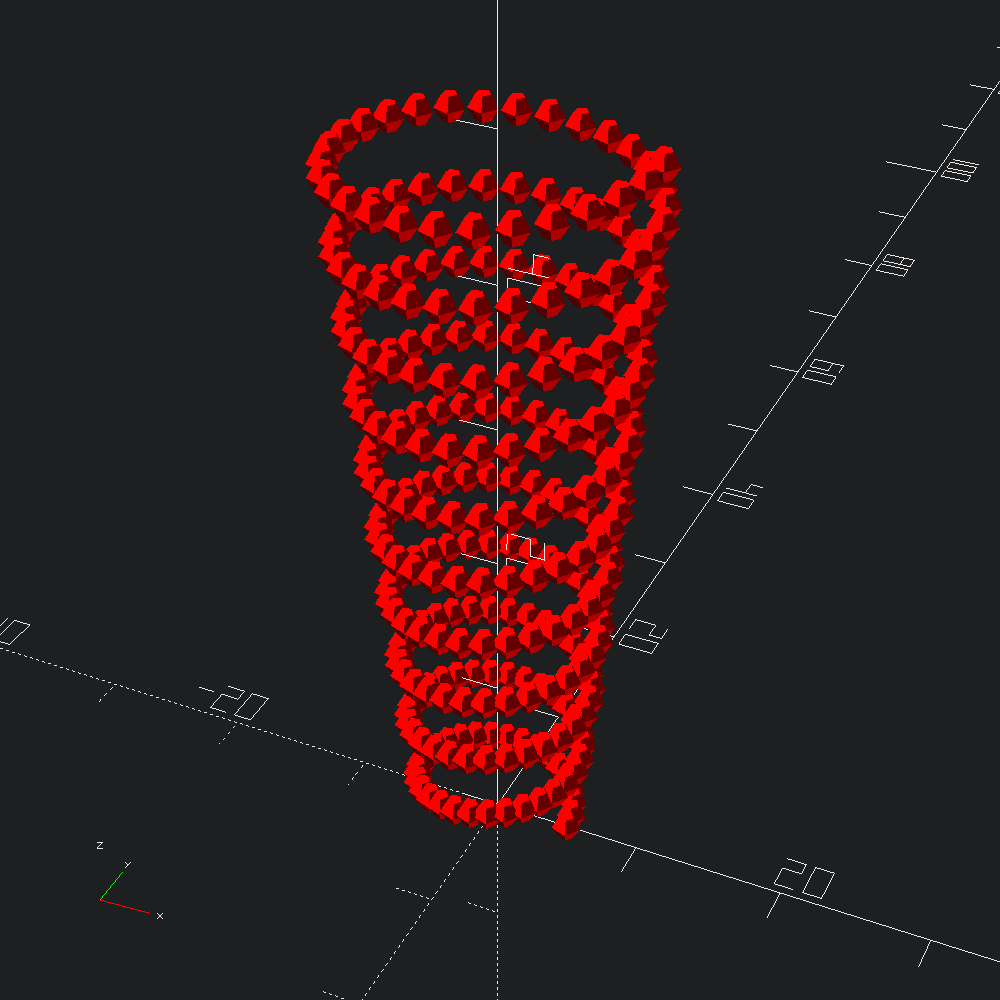
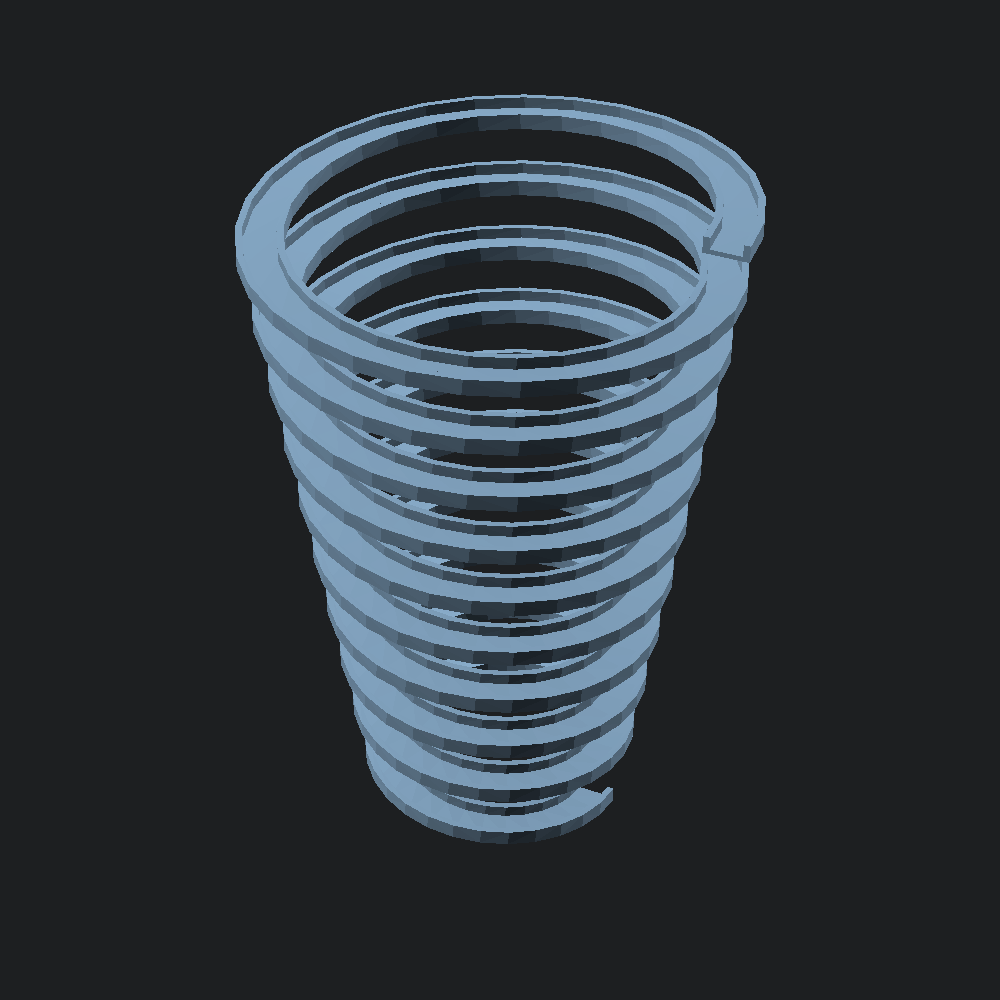

open Scad_ml
let () =
let scad =
let pts = Path3.helix ~left:false ~pitch:5. ~n_turns:10 ~r2:10. 5. in
let s = Scad.color Color.Red @@ Scad.sphere 1. in
Scad.union @@ List.map (fun p -> Scad.translate p s) pts
in
Scad.to_file "helix_path_points.scad" scad
let poly =
[ -10., -1.; -10., 6.; -7., 6.; -7., 1.; 7., 1.; 7., 6.; 10., 6.; 10., -1. ]
|> Path2.of_tups
|> Poly2.make
let mesh =
Mesh.helix_extrude ~scale:(v2 1. 1.) ~left:true ~pitch:30. ~n_turns:10 ~r2:100. 50. poly
let () = Scad.to_file "helix_extrude.scad" (Mesh.to_scad mesh)